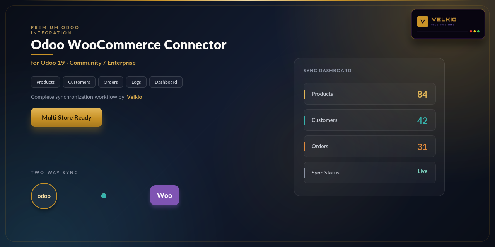
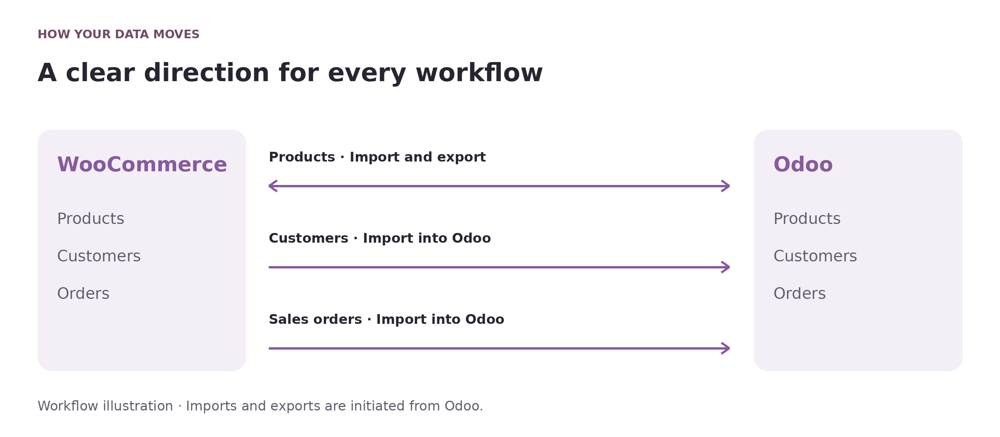

<section class="oe_container" style="box-sizing:border-box;display:block;max-width:1320px;width:100%;margin:0 auto;line-height:1.6;font-family:Arial,Helvetica,sans-serif;color:#282532;background-color:#FFFFFF;">
<div class="container py-3" style="box-sizing:border-box;width:100%;margin:0 auto;padding:0 16px;padding-top:16px;padding-bottom:16px;">
<div class="row align-items-center mb-3" style="box-sizing:border-box;display:flex;flex-wrap:wrap;margin-left:-10px;margin-right:-10px;align-items:center;margin-bottom:16px;"><div class="col-sm-4" style="box-sizing:border-box;flex:1 1 280px;min-width:0;max-width:100%;padding-left:10px;padding-right:10px;"></div><div class="col-sm-8 text-sm-right text-sm-end" style="box-sizing:border-box;flex:2 1 560px;min-width:0;max-width:100%;padding-left:10px;padding-right:10px;"><span class="badge p-2 m-1" style="box-sizing:border-box;display:inline-block;font-size:12px;font-weight:700;line-height:1.3;border-radius:5px;padding:8px;margin:4px;color:#714B67;background-color:#F6F1F6;">Odoo 19</span><span class="badge p-2 m-1" style="box-sizing:border-box;display:inline-block;font-size:12px;font-weight:700;line-height:1.3;border-radius:5px;padding:8px;margin:4px;color:#714B67;background-color:#F6F1F6;">Community &amp; Enterprise</span></div></div>
<section id="overview" class="p-3 p-md-4 my-3 rounded" style="box-sizing:border-box;padding:16px;margin-top:16px;margin-bottom:16px;border-radius:10px;background-color:#F6F1F6;">
<div class="text-center mb-4" style="box-sizing:border-box;text-align:center;margin-bottom:24px;"><p style="box-sizing:border-box;margin:0 0 16px;overflow-wrap:anywhere;font-size:12px;letter-spacing:2px;color:#9A7135;font-weight:700;">VELKIO ODOO SOLUTIONS</p><h1 style="box-sizing:border-box;margin:0 0 16px;line-height:1.15;font-size:42px;font-weight:800;color:#282532;">WooCommerce Connector</h1><p style="box-sizing:border-box;margin:0 0 16px;overflow-wrap:anywhere;font-size:20px;line-height:1.5;color:#714B67;">Your store and Odoo. One clear workflow.</p></div><div class="row mb-4" style="box-sizing:border-box;display:flex;flex-wrap:wrap;margin-left:-10px;margin-right:-10px;margin-bottom:24px;"><div class="col-6 col-md-4 col-lg-2 mb-2" style="box-sizing:border-box;flex:1 1 125px;min-width:0;max-width:100%;padding-left:10px;padding-right:10px;margin-bottom:8px;"><div class="h-100 p-3 text-center rounded" style="box-sizing:border-box;height:100%;padding:16px;text-align:center;border-radius:10px;background-color:#302236;"><div style="box-sizing:border-box;color:#E5BE7E;font-size:21px;font-weight:700;">19.0</div><div style="box-sizing:border-box;color:#F5EFF6;font-size:13px;">Odoo version</div></div></div><div class="col-6 col-md-4 col-lg-2 mb-2" style="box-sizing:border-box;flex:1 1 125px;min-width:0;max-width:100%;padding-left:10px;padding-right:10px;margin-bottom:8px;"><div class="h-100 p-3 text-center rounded" style="box-sizing:border-box;height:100%;padding:16px;text-align:center;border-radius:10px;background-color:#302236;"><div style="box-sizing:border-box;color:#E5BE7E;font-size:21px;font-weight:700;">CE / EE</div><div style="box-sizing:border-box;color:#F5EFF6;font-size:13px;">Editions</div></div></div><div class="col-6 col-md-4 col-lg-2 mb-2" style="box-sizing:border-box;flex:1 1 125px;min-width:0;max-width:100%;padding-left:10px;padding-right:10px;margin-bottom:8px;"><div class="h-100 p-3 text-center rounded" style="box-sizing:border-box;height:100%;padding:16px;text-align:center;border-radius:10px;background-color:#302236;"><div style="box-sizing:border-box;color:#E5BE7E;font-size:21px;font-weight:700;">Odoo.sh</div><div style="box-sizing:border-box;color:#F5EFF6;font-size:13px;">Cloud deployment</div></div></div><div class="col-6 col-md-4 col-lg-2 mb-2" style="box-sizing:border-box;flex:1 1 125px;min-width:0;max-width:100%;padding-left:10px;padding-right:10px;margin-bottom:8px;"><div class="h-100 p-3 text-center rounded" style="box-sizing:border-box;height:100%;padding:16px;text-align:center;border-radius:10px;background-color:#302236;"><div style="box-sizing:border-box;color:#E5BE7E;font-size:21px;font-weight:700;">On-premise</div><div style="box-sizing:border-box;color:#F5EFF6;font-size:13px;">Self-hosted</div></div></div><div class="col-6 col-md-4 col-lg-2 mb-2" style="box-sizing:border-box;flex:1 1 125px;min-width:0;max-width:100%;padding-left:10px;padding-right:10px;margin-bottom:8px;"><div class="h-100 p-3 text-center rounded" style="box-sizing:border-box;height:100%;padding:16px;text-align:center;border-radius:10px;background-color:#302236;"><div style="box-sizing:border-box;color:#E5BE7E;font-size:21px;font-weight:700;">OPL-1</div><div style="box-sizing:border-box;color:#F5EFF6;font-size:13px;">Module license</div></div></div><div class="col-6 col-md-4 col-lg-2 mb-2" style="box-sizing:border-box;flex:1 1 125px;min-width:0;max-width:100%;padding-left:10px;padding-right:10px;margin-bottom:8px;"><div class="h-100 p-3 text-center rounded" style="box-sizing:border-box;height:100%;padding:16px;text-align:center;border-radius:10px;background-color:#302236;"><div style="box-sizing:border-box;color:#E5BE7E;font-size:21px;font-weight:700;">Sync</div><div style="box-sizing:border-box;color:#F5EFF6;font-size:13px;">Manual</div></div></div></div><div class="row align-items-center" style="box-sizing:border-box;display:flex;flex-wrap:wrap;margin-left:-10px;margin-right:-10px;align-items:center;"><div class="col-lg-6 mb-4" style="box-sizing:border-box;flex:1 1 420px;min-width:0;max-width:100%;padding-left:10px;padding-right:10px;margin-bottom:24px;"><h2 style="box-sizing:border-box;margin:0 0 16px;line-height:1.3;font-size:27px;font-weight:700;color:#282532;">Bring store records into your Odoo workspace</h2><p class="" style="box-sizing:border-box;margin:0 0 16px;overflow-wrap:anywhere;color:#625F6C;font-size:16px;line-height:1.8;">Bring WooCommerce products, customers and sales orders into Odoo. Update mapped store products from Odoo, manage multiple connections and review your synchronization activity in one workspace.</p><ul class="pl-4" style="box-sizing:border-box;padding-left:24px;color:#514A59;font-size:16px;line-height:1.9;"><li style="box-sizing:border-box;">Multiple stores</li><li style="box-sizing:border-box;">Product import &amp; export</li><li style="box-sizing:border-box;">Customer &amp; order imports</li></ul><a href="#features" class="btn px-4 py-3 m-1" style="box-sizing:border-box;text-decoration:none;display:inline-block;text-align:center;line-height:1.5;padding-left:24px;padding-right:24px;padding-top:16px;padding-bottom:16px;margin:4px;background-color:#714B67;color:#FFFFFF;border:1px solid #714B67;font-size:15px;font-weight:700;border-radius:8px;">Explore capabilities</a><a href="#setup" class="btn px-4 py-3 m-1" style="box-sizing:border-box;text-decoration:none;display:inline-block;text-align:center;line-height:1.5;padding-left:24px;padding-right:24px;padding-top:16px;padding-bottom:16px;margin:4px;background-color:#FFFFFF;color:#714B67;border:1px solid #714B67;font-size:15px;font-weight:700;border-radius:8px;">Setup &amp; requirements</a></div><div class="col-lg-6 mb-4" style="box-sizing:border-box;flex:1 1 420px;min-width:0;max-width:100%;padding-left:10px;padding-right:10px;margin-bottom:24px;"><div class="p-3 rounded" style="box-sizing:border-box;padding:16px;border-radius:10px;background-color:#302236;"><div class="p-3 rounded" style="box-sizing:border-box;padding:16px;border-radius:10px;background-color:#FFFFFF;"><p style="box-sizing:border-box;margin:0 0 16px;overflow-wrap:anywhere;color:#714B67;font-size:12px;font-weight:700;letter-spacing:1px;">YOUR OPERATIONAL WORKSPACE</p><div class="row" style="box-sizing:border-box;display:flex;flex-wrap:wrap;margin-left:-10px;margin-right:-10px;"><div class="col-sm-6 mb-3" style="box-sizing:border-box;flex:1 1 180px;min-width:0;max-width:100%;padding-left:10px;padding-right:10px;margin-bottom:16px;"><div class="h-100 border rounded p-3" style="box-sizing:border-box;height:100%;border:1px solid #E6DFE8;border-radius:10px;padding:16px;background-color:#F8F5F9;"><h3 style="box-sizing:border-box;margin:0 0 16px;line-height:1.3;font-size:18px;color:#714B67;">Products</h3><p class="mb-0" style="box-sizing:border-box;margin:0 0 16px;overflow-wrap:anywhere;margin-bottom:0;font-size:14px;color:#625F6C;line-height:1.5;">Names, SKUs and prices</p></div></div><div class="col-sm-6 mb-3" style="box-sizing:border-box;flex:1 1 180px;min-width:0;max-width:100%;padding-left:10px;padding-right:10px;margin-bottom:16px;"><div class="h-100 border rounded p-3" style="box-sizing:border-box;height:100%;border:1px solid #E6DFE8;border-radius:10px;padding:16px;background-color:#F8F5F9;"><h3 style="box-sizing:border-box;margin:0 0 16px;line-height:1.3;font-size:18px;color:#714B67;">Customers</h3><p class="mb-0" style="box-sizing:border-box;margin:0 0 16px;overflow-wrap:anywhere;margin-bottom:0;font-size:14px;color:#625F6C;line-height:1.5;">Contacts imported to Odoo</p></div></div><div class="col-sm-6 mb-3" style="box-sizing:border-box;flex:1 1 180px;min-width:0;max-width:100%;padding-left:10px;padding-right:10px;margin-bottom:16px;"><div class="h-100 border rounded p-3" style="box-sizing:border-box;height:100%;border:1px solid #E6DFE8;border-radius:10px;padding:16px;background-color:#F8F5F9;"><h3 style="box-sizing:border-box;margin:0 0 16px;line-height:1.3;font-size:18px;color:#714B67;">Sales orders</h3><p class="mb-0" style="box-sizing:border-box;margin:0 0 16px;overflow-wrap:anywhere;margin-bottom:0;font-size:14px;color:#625F6C;line-height:1.5;">New orders and their lines</p></div></div><div class="col-sm-6 mb-3" style="box-sizing:border-box;flex:1 1 180px;min-width:0;max-width:100%;padding-left:10px;padding-right:10px;margin-bottom:16px;"><div class="h-100 border rounded p-3" style="box-sizing:border-box;height:100%;border:1px solid #E6DFE8;border-radius:10px;padding:16px;background-color:#F8F5F9;"><h3 style="box-sizing:border-box;margin:0 0 16px;line-height:1.3;font-size:18px;color:#714B67;">Multiple stores</h3><p class="mb-0" style="box-sizing:border-box;margin:0 0 16px;overflow-wrap:anywhere;margin-bottom:0;font-size:14px;color:#625F6C;line-height:1.5;">Separate connection settings</p></div></div><div class="col-sm-6 mb-3" style="box-sizing:border-box;flex:1 1 180px;min-width:0;max-width:100%;padding-left:10px;padding-right:10px;margin-bottom:16px;"><div class="h-100 border rounded p-3" style="box-sizing:border-box;height:100%;border:1px solid #E6DFE8;border-radius:10px;padding:16px;background-color:#F8F5F9;"><h3 style="box-sizing:border-box;margin:0 0 16px;line-height:1.3;font-size:18px;color:#714B67;">Mappings</h3><p class="mb-0" style="box-sizing:border-box;margin:0 0 16px;overflow-wrap:anywhere;margin-bottom:0;font-size:14px;color:#625F6C;line-height:1.5;">Linked store and Odoo records</p></div></div><div class="col-sm-6 mb-3" style="box-sizing:border-box;flex:1 1 180px;min-width:0;max-width:100%;padding-left:10px;padding-right:10px;margin-bottom:16px;"><div class="h-100 border rounded p-3" style="box-sizing:border-box;height:100%;border:1px solid #E6DFE8;border-radius:10px;padding:16px;background-color:#F8F5F9;"><h3 style="box-sizing:border-box;margin:0 0 16px;line-height:1.3;font-size:18px;color:#714B67;">Sync logs</h3><p class="mb-0" style="box-sizing:border-box;margin:0 0 16px;overflow-wrap:anywhere;margin-bottom:0;font-size:14px;color:#625F6C;line-height:1.5;">Review operation results</p></div></div></div></div></div></div></div>
</section>
<div class="text-center p-2 my-3 border rounded" style="box-sizing:border-box;text-align:center;padding:8px;margin-top:16px;margin-bottom:16px;border:1px solid #E6DFE8;border-radius:10px;background-color:#FFFFFF;"><a href="#overview" class="d-inline-block px-3 py-2" style="box-sizing:border-box;text-decoration:none;display:inline-block;padding-left:16px;padding-right:16px;padding-top:8px;padding-bottom:8px;color:#714B67;font-size:14px;font-weight:700;">Overview</a><a href="#features" class="d-inline-block px-3 py-2" style="box-sizing:border-box;text-decoration:none;display:inline-block;padding-left:16px;padding-right:16px;padding-top:8px;padding-bottom:8px;color:#714B67;font-size:14px;font-weight:700;">Capabilities</a><a href="#coverage" class="d-inline-block px-3 py-2" style="box-sizing:border-box;text-decoration:none;display:inline-block;padding-left:16px;padding-right:16px;padding-top:8px;padding-bottom:8px;color:#714B67;font-size:14px;font-weight:700;">What syncs</a><a href="#setup" class="d-inline-block px-3 py-2" style="box-sizing:border-box;text-decoration:none;display:inline-block;padding-left:16px;padding-right:16px;padding-top:8px;padding-bottom:8px;color:#714B67;font-size:14px;font-weight:700;">Setup</a><a href="#workspace" class="d-inline-block px-3 py-2" style="box-sizing:border-box;text-decoration:none;display:inline-block;padding-left:16px;padding-right:16px;padding-top:8px;padding-bottom:8px;color:#714B67;font-size:14px;font-weight:700;">Workspace</a><a href="#documentation" class="d-inline-block px-3 py-2" style="box-sizing:border-box;text-decoration:none;display:inline-block;padding-left:16px;padding-right:16px;padding-top:8px;padding-bottom:8px;color:#714B67;font-size:14px;font-weight:700;">Documentation</a><a href="#faq" class="d-inline-block px-3 py-2" style="box-sizing:border-box;text-decoration:none;display:inline-block;padding-left:16px;padding-right:16px;padding-top:8px;padding-bottom:8px;color:#714B67;font-size:14px;font-weight:700;">FAQs</a><a href="#support" class="d-inline-block px-3 py-2" style="box-sizing:border-box;text-decoration:none;display:inline-block;padding-left:16px;padding-right:16px;padding-top:8px;padding-bottom:8px;color:#714B67;font-size:14px;font-weight:700;">Support</a></div>
<div class="my-4" style="box-sizing:border-box;margin-top:24px;margin-bottom:24px;"></div>
<section id="features" class="p-3 p-md-4 my-3 rounded" style="box-sizing:border-box;padding:16px;margin-top:16px;margin-bottom:16px;border-radius:10px;background-color:#FFFFFF;">
<p class="mb-2" style="box-sizing:border-box;margin:0 0 16px;overflow-wrap:anywhere;margin-bottom:8px;color:#714B67;font-size:12px;font-weight:700;letter-spacing:2px;">CONNECTOR CAPABILITIES</p>
<h2 class="mb-4" style="box-sizing:border-box;margin:0 0 16px;line-height:1.3;margin-bottom:24px;color:#282532;font-size:29px;font-weight:700;">See how it fits your everyday work</h2><p class="" style="box-sizing:border-box;margin:0 0 16px;overflow-wrap:anywhere;color:#625F6C;font-size:16px;line-height:1.8;">Explore the operations included in this release, from connection setup through record review.</p><div class="row" style="box-sizing:border-box;display:flex;flex-wrap:wrap;margin-left:-10px;margin-right:-10px;">
<div class="col-md-6 col-lg-4 mb-3" style="box-sizing:border-box;flex:1 1 280px;min-width:0;max-width:100%;padding-left:10px;padding-right:10px;margin-bottom:16px;"><div class="h-100 p-4 border rounded" style="box-sizing:border-box;height:100%;padding:24px;border:1px solid #E6DFE8;border-radius:10px;border-color:#E6DFE8;background-color:#FFFFFF;">
<p style="box-sizing:border-box;margin:0 0 16px;overflow-wrap:anywhere;color:#9A7135;font-size:13px;font-weight:700;">01</p><h3 style="box-sizing:border-box;margin:0 0 16px;line-height:1.3;color:#282532;font-size:20px;font-weight:700;">One workspace for your stores</h3>
<p class="" style="box-sizing:border-box;margin:0 0 16px;overflow-wrap:anywhere;color:#625F6C;font-size:16px;line-height:1.8;">Keep separate API credentials, company, warehouse and pricelist defaults for each WooCommerce connection.</p></div></div>
<div class="col-md-6 col-lg-4 mb-3" style="box-sizing:border-box;flex:1 1 280px;min-width:0;max-width:100%;padding-left:10px;padding-right:10px;margin-bottom:16px;"><div class="h-100 p-4 border rounded" style="box-sizing:border-box;height:100%;padding:24px;border:1px solid #E6DFE8;border-radius:10px;border-color:#E6DFE8;background-color:#FFFFFF;">
<p style="box-sizing:border-box;margin:0 0 16px;overflow-wrap:anywhere;color:#9A7135;font-size:13px;font-weight:700;">02</p><h3 style="box-sizing:border-box;margin:0 0 16px;line-height:1.3;color:#282532;font-size:20px;font-weight:700;">Product data in both directions</h3>
<p class="" style="box-sizing:border-box;margin:0 0 16px;overflow-wrap:anywhere;color:#625F6C;font-size:16px;line-height:1.8;">Import product names, SKUs and prices. Export the name, SKU and regular price of mapped Odoo products.</p></div></div>
<div class="col-md-6 col-lg-4 mb-3" style="box-sizing:border-box;flex:1 1 280px;min-width:0;max-width:100%;padding-left:10px;padding-right:10px;margin-bottom:16px;"><div class="h-100 p-4 border rounded" style="box-sizing:border-box;height:100%;padding:24px;border:1px solid #E6DFE8;border-radius:10px;border-color:#E6DFE8;background-color:#FFFFFF;">
<p style="box-sizing:border-box;margin:0 0 16px;overflow-wrap:anywhere;color:#9A7135;font-size:13px;font-weight:700;">03</p><h3 style="box-sizing:border-box;margin:0 0 16px;line-height:1.3;color:#282532;font-size:20px;font-weight:700;">Customer records in Odoo</h3>
<p class="" style="box-sizing:border-box;margin:0 0 16px;overflow-wrap:anywhere;color:#625F6C;font-size:16px;line-height:1.8;">Import customer names, email addresses and phone numbers, then review their store-to-Odoo mappings.</p></div></div>
<div class="col-md-6 col-lg-4 mb-3" style="box-sizing:border-box;flex:1 1 280px;min-width:0;max-width:100%;padding-left:10px;padding-right:10px;margin-bottom:16px;"><div class="h-100 p-4 border rounded" style="box-sizing:border-box;height:100%;padding:24px;border:1px solid #E6DFE8;border-radius:10px;border-color:#E6DFE8;background-color:#FFFFFF;">
<p style="box-sizing:border-box;margin:0 0 16px;overflow-wrap:anywhere;color:#9A7135;font-size:13px;font-weight:700;">04</p><h3 style="box-sizing:border-box;margin:0 0 16px;line-height:1.3;color:#282532;font-size:20px;font-weight:700;">Store orders become sales orders</h3>
<p class="" style="box-sizing:border-box;margin:0 0 16px;overflow-wrap:anywhere;color:#625F6C;font-size:16px;line-height:1.8;">Import new orders with product lines, quantities and prices. Choose whether to confirm imported sales orders automatically.</p></div></div>
<div class="col-md-6 col-lg-4 mb-3" style="box-sizing:border-box;flex:1 1 280px;min-width:0;max-width:100%;padding-left:10px;padding-right:10px;margin-bottom:16px;"><div class="h-100 p-4 border rounded" style="box-sizing:border-box;height:100%;padding:24px;border:1px solid #E6DFE8;border-radius:10px;border-color:#E6DFE8;background-color:#FFFFFF;">
<p style="box-sizing:border-box;margin:0 0 16px;overflow-wrap:anywhere;color:#9A7135;font-size:13px;font-weight:700;">05</p><h3 style="box-sizing:border-box;margin:0 0 16px;line-height:1.3;color:#282532;font-size:20px;font-weight:700;">Record links you can inspect</h3>
<p class="" style="box-sizing:border-box;margin:0 0 16px;overflow-wrap:anywhere;color:#625F6C;font-size:16px;line-height:1.8;">Open product, customer and order mappings to see which WooCommerce record corresponds to each Odoo record.</p></div></div>
<div class="col-md-6 col-lg-4 mb-3" style="box-sizing:border-box;flex:1 1 280px;min-width:0;max-width:100%;padding-left:10px;padding-right:10px;margin-bottom:16px;"><div class="h-100 p-4 border rounded" style="box-sizing:border-box;height:100%;padding:24px;border:1px solid #E6DFE8;border-radius:10px;border-color:#E6DFE8;background-color:#FFFFFF;">
<p style="box-sizing:border-box;margin:0 0 16px;overflow-wrap:anywhere;color:#9A7135;font-size:13px;font-weight:700;">06</p><h3 style="box-sizing:border-box;margin:0 0 16px;line-height:1.3;color:#282532;font-size:20px;font-weight:700;">Dashboard and operation history</h3>
<p class="" style="box-sizing:border-box;margin:0 0 16px;overflow-wrap:anywhere;color:#625F6C;font-size:16px;line-height:1.8;">Review connected stores, synchronization activity and operation results. Run import and export actions from Odoo.</p></div></div>
</div>
</section>
<section id="coverage" class="p-3 p-md-4 my-3 rounded" style="box-sizing:border-box;padding:16px;margin-top:16px;margin-bottom:16px;border-radius:10px;background-color:#F6F1F6;">
<p class="mb-2" style="box-sizing:border-box;margin:0 0 16px;overflow-wrap:anywhere;margin-bottom:8px;color:#714B67;font-size:12px;font-weight:700;letter-spacing:2px;">SYNCHRONIZATION COVERAGE</p>
<h2 class="mb-4" style="box-sizing:border-box;margin:0 0 16px;line-height:1.3;margin-bottom:24px;color:#282532;font-size:29px;font-weight:700;">Which records move between your systems?</h2><div class="row" style="box-sizing:border-box;display:flex;flex-wrap:wrap;margin-left:-10px;margin-right:-10px;"><div class="col-md-6 col-lg-4 mb-3" style="box-sizing:border-box;flex:1 1 280px;min-width:0;max-width:100%;padding-left:10px;padding-right:10px;margin-bottom:16px;"><div class="h-100 p-4 border rounded" style="box-sizing:border-box;height:100%;padding:24px;border:1px solid #E6DFE8;border-radius:10px;background-color:#FFFFFF;"><p class="mb-3" style="box-sizing:border-box;margin:0 0 16px;overflow-wrap:anywhere;margin-bottom:16px;font-size:12px;color:#714B67;font-weight:700;">WooCommerce ↔ Odoo</p><h3 style="box-sizing:border-box;margin:0 0 16px;line-height:1.3;color:#282532;font-size:22px;">Products</h3><p class="" style="box-sizing:border-box;margin:0 0 16px;overflow-wrap:anywhere;color:#625F6C;font-size:16px;line-height:1.8;">Names, SKUs and prices; export operates on product mappings.</p></div></div><div class="col-md-6 col-lg-4 mb-3" style="box-sizing:border-box;flex:1 1 280px;min-width:0;max-width:100%;padding-left:10px;padding-right:10px;margin-bottom:16px;"><div class="h-100 p-4 border rounded" style="box-sizing:border-box;height:100%;padding:24px;border:1px solid #E6DFE8;border-radius:10px;background-color:#FFFFFF;"><p class="mb-3" style="box-sizing:border-box;margin:0 0 16px;overflow-wrap:anywhere;margin-bottom:16px;font-size:12px;color:#714B67;font-weight:700;">WooCommerce → Odoo</p><h3 style="box-sizing:border-box;margin:0 0 16px;line-height:1.3;color:#282532;font-size:22px;">Customers</h3><p class="" style="box-sizing:border-box;margin:0 0 16px;overflow-wrap:anywhere;color:#625F6C;font-size:16px;line-height:1.8;">Names, email addresses and phone numbers.</p></div></div><div class="col-md-6 col-lg-4 mb-3" style="box-sizing:border-box;flex:1 1 280px;min-width:0;max-width:100%;padding-left:10px;padding-right:10px;margin-bottom:16px;"><div class="h-100 p-4 border rounded" style="box-sizing:border-box;height:100%;padding:24px;border:1px solid #E6DFE8;border-radius:10px;background-color:#FFFFFF;"><p class="mb-3" style="box-sizing:border-box;margin:0 0 16px;overflow-wrap:anywhere;margin-bottom:16px;font-size:12px;color:#714B67;font-weight:700;">WooCommerce → Odoo</p><h3 style="box-sizing:border-box;margin:0 0 16px;line-height:1.3;color:#282532;font-size:22px;">Sales orders</h3><p class="" style="box-sizing:border-box;margin:0 0 16px;overflow-wrap:anywhere;color:#625F6C;font-size:16px;line-height:1.8;">New sales orders and product lines. Already mapped orders are skipped.</p></div></div></div><div class="p-3 border rounded" style="box-sizing:border-box;padding:16px;border:1px solid #E6DFE8;border-radius:10px;background-color:#FFFFFF;"><h3 style="box-sizing:border-box;margin:0 0 16px;line-height:1.3;font-size:18px;color:#714B67;">Understand the scope</h3><p class="mb-0" style="box-sizing:border-box;margin:0 0 16px;overflow-wrap:anywhere;margin-bottom:0;color:#625F6C;font-size:16px;line-height:1.8;">Synchronization is action-based. Sync All imports products, customers and orders; product export is a separate action. This release does not provide scheduled sync, webhooks, stock-quantity sync, image sync, variation sync, refund sync or order-status updates back to WooCommerce. Shipping charges, discounts and tax-line mapping are not included in the order import.</p></div>
</section>
<div class="row align-items-center p-3 p-md-4 my-4 rounded" style="box-sizing:border-box;display:flex;flex-wrap:wrap;margin-left:-10px;margin-right:-10px;align-items:center;padding:16px;margin-top:24px;margin-bottom:24px;border-radius:10px;background-color:#302236;"><div class="col-lg-8" style="box-sizing:border-box;flex:2 1 560px;min-width:0;max-width:100%;padding-left:10px;padding-right:10px;"><h3 style="box-sizing:border-box;margin:0 0 16px;line-height:1.3;color:#FFFFFF;font-size:25px;">Make your first connection with confidence</h3><p class="mb-2" style="box-sizing:border-box;margin:0 0 16px;overflow-wrap:anywhere;margin-bottom:8px;color:#E9DFEC;font-size:16px;line-height:1.7;">Check prerequisites, choose your settings and validate a small first synchronization.</p></div><div class="col-lg-4 text-lg-right text-lg-end" style="box-sizing:border-box;flex:1 1 280px;min-width:0;max-width:100%;padding-left:10px;padding-right:10px;"><a href="#setup" class="btn px-4 py-3 m-1" style="box-sizing:border-box;text-decoration:none;display:inline-block;text-align:center;line-height:1.5;padding-left:24px;padding-right:24px;padding-top:16px;padding-bottom:16px;margin:4px;background-color:#FFFFFF;color:#714B67;border:1px solid #714B67;font-size:15px;font-weight:700;border-radius:8px;">Read the setup guide</a></div></div>
<section id="details" class="p-3 p-md-4 my-3 rounded" style="box-sizing:border-box;padding:16px;margin-top:16px;margin-bottom:16px;border-radius:10px;background-color:#FFFFFF;">
<p class="mb-2" style="box-sizing:border-box;margin:0 0 16px;overflow-wrap:anywhere;margin-bottom:8px;color:#714B67;font-size:12px;font-weight:700;letter-spacing:2px;">OPERATIONAL DETAILS</p>
<h2 class="mb-4" style="box-sizing:border-box;margin:0 0 16px;line-height:1.3;margin-bottom:24px;color:#282532;font-size:29px;font-weight:700;">A closer look at the controls you will use</h2><div class="row" style="box-sizing:border-box;display:flex;flex-wrap:wrap;margin-left:-10px;margin-right:-10px;"><div class="col-lg-4 mb-3" style="box-sizing:border-box;flex:1 1 280px;min-width:0;max-width:100%;padding-left:10px;padding-right:10px;margin-bottom:16px;"><div class="h-100 p-4 border rounded" style="box-sizing:border-box;height:100%;padding:24px;border:1px solid #E6DFE8;border-radius:10px;"><h3 style="box-sizing:border-box;margin:0 0 16px;line-height:1.3;font-size:21px;color:#714B67;">Connection &amp; store defaults</h3><ul class="pl-3" style="box-sizing:border-box;padding-left:16px;color:#625F6C;font-size:15px;line-height:1.8;"><li class="mb-2" style="box-sizing:border-box;margin-bottom:8px;">Keep separate API credentials, company, warehouse and pricelist defaults for each WooCommerce connection.</li><li class="mb-2" style="box-sizing:border-box;margin-bottom:8px;">Save the instance and select Test Connection. If it fails, check the store URL, API permissions and whether the Odoo server can reach the store.</li></ul></div></div><div class="col-lg-4 mb-3" style="box-sizing:border-box;flex:1 1 280px;min-width:0;max-width:100%;padding-left:10px;padding-right:10px;margin-bottom:16px;"><div class="h-100 p-4 border rounded" style="box-sizing:border-box;height:100%;padding:24px;border:1px solid #E6DFE8;border-radius:10px;"><h3 style="box-sizing:border-box;margin:0 0 16px;line-height:1.3;font-size:21px;color:#714B67;">Catalog &amp; order handling</h3><ul class="pl-3" style="box-sizing:border-box;padding-left:16px;color:#625F6C;font-size:15px;line-height:1.8;"><li class="mb-2" style="box-sizing:border-box;margin-bottom:8px;">Import product names, SKUs and prices. Export the name, SKU and regular price of mapped Odoo products.</li><li class="mb-2" style="box-sizing:border-box;margin-bottom:8px;">Import new orders with product lines, quantities and prices. Choose whether to confirm imported sales orders automatically.</li></ul></div></div><div class="col-lg-4 mb-3" style="box-sizing:border-box;flex:1 1 280px;min-width:0;max-width:100%;padding-left:10px;padding-right:10px;margin-bottom:16px;"><div class="h-100 p-4 border rounded" style="box-sizing:border-box;height:100%;padding:24px;border:1px solid #E6DFE8;border-radius:10px;"><h3 style="box-sizing:border-box;margin:0 0 16px;line-height:1.3;font-size:21px;color:#714B67;">Visibility &amp; record links</h3><ul class="pl-3" style="box-sizing:border-box;padding-left:16px;color:#625F6C;font-size:15px;line-height:1.8;"><li class="mb-2" style="box-sizing:border-box;margin-bottom:8px;">Open product, customer and order mappings to see which WooCommerce record corresponds to each Odoo record.</li><li class="mb-2" style="box-sizing:border-box;margin-bottom:8px;">Review connected stores, synchronization activity and operation results. Run import and export actions from Odoo.</li></ul></div></div></div>
</section>
<section id="setup" class="p-3 p-md-4 my-3 rounded" style="box-sizing:border-box;padding:16px;margin-top:16px;margin-bottom:16px;border-radius:10px;background-color:#FFFFFF;">
<p class="mb-2" style="box-sizing:border-box;margin:0 0 16px;overflow-wrap:anywhere;margin-bottom:8px;color:#714B67;font-size:12px;font-weight:700;letter-spacing:2px;">GETTING STARTED</p>
<h2 class="mb-4" style="box-sizing:border-box;margin:0 0 16px;line-height:1.3;margin-bottom:24px;color:#282532;font-size:29px;font-weight:700;">Prepare, connect and validate</h2><div class="p-3 p-md-4 border rounded mb-4" style="box-sizing:border-box;padding:16px;border:1px solid #E6DFE8;border-radius:10px;margin-bottom:24px;background-color:#F8F5EF;"><h3 style="box-sizing:border-box;margin:0 0 16px;line-height:1.3;font-size:21px;color:#282532;">Before installation</h3><p class="" style="box-sizing:border-box;margin:0 0 16px;overflow-wrap:anywhere;color:#625F6C;font-size:16px;line-height:1.8;">Odoo 19 on Odoo.sh or on-premise, with custom Python add-ons enabled. Standard Odoo Online does not support these modules.</p><ul style="box-sizing:border-box;color:#625F6C;font-size:16px;line-height:1.8;"><li class="mb-2" style="box-sizing:border-box;margin-bottom:8px;">An Odoo 19 environment with Sales and Inventory. Required Odoo dependencies are installed with the module.</li><li class="mb-2" style="box-sizing:border-box;margin-bottom:8px;">A WooCommerce store reachable from the Odoo server, preferably over HTTPS.</li><li class="mb-2" style="box-sizing:border-box;margin-bottom:8px;">A WooCommerce REST API key with Read/Write access, associated with a user allowed to access the required store data.</li><li class="mb-2" style="box-sizing:border-box;margin-bottom:8px;">WordPress permalinks set to an option other than Plain. WooCommerce uses the wc/v3 REST API for this connector.</li></ul></div><div class="row" style="box-sizing:border-box;display:flex;flex-wrap:wrap;margin-left:-10px;margin-right:-10px;">
<div class="col-md-6 mb-3" style="box-sizing:border-box;flex:1 1 420px;min-width:0;max-width:100%;padding-left:10px;padding-right:10px;margin-bottom:16px;"><div class="h-100 p-4 border rounded" style="box-sizing:border-box;height:100%;padding:24px;border:1px solid #E6DFE8;border-radius:10px;border-color:#E6DFE8;background-color:#FFFFFF;">
<p style="box-sizing:border-box;margin:0 0 16px;overflow-wrap:anywhere;color:#9A7135;font-size:13px;font-weight:700;">01</p><h3 style="box-sizing:border-box;margin:0 0 16px;line-height:1.3;color:#282532;font-size:20px;font-weight:700;">Install the connector</h3>
<p class="" style="box-sizing:border-box;margin:0 0 16px;overflow-wrap:anywhere;color:#625F6C;font-size:16px;line-height:1.8;">Add the module to your custom add-ons, update the Apps list and install WooCommerce Connector. Open WooCommerce from the app menu.</p></div></div>
<div class="col-md-6 mb-3" style="box-sizing:border-box;flex:1 1 420px;min-width:0;max-width:100%;padding-left:10px;padding-right:10px;margin-bottom:16px;"><div class="h-100 p-4 border rounded" style="box-sizing:border-box;height:100%;padding:24px;border:1px solid #E6DFE8;border-radius:10px;border-color:#E6DFE8;background-color:#FFFFFF;">
<p style="box-sizing:border-box;margin:0 0 16px;overflow-wrap:anywhere;color:#9A7135;font-size:13px;font-weight:700;">02</p><h3 style="box-sizing:border-box;margin:0 0 16px;line-height:1.3;color:#282532;font-size:20px;font-weight:700;">Create your store API keys</h3>
<p class="" style="box-sizing:border-box;margin:0 0 16px;overflow-wrap:anywhere;color:#625F6C;font-size:16px;line-height:1.8;">In WordPress, go to WooCommerce → Settings → Advanced → REST API → Add Key. Choose Read/Write permission and generate the key. Save the Consumer Key and Consumer Secret securely.</p></div></div>
<div class="col-md-6 mb-3" style="box-sizing:border-box;flex:1 1 420px;min-width:0;max-width:100%;padding-left:10px;padding-right:10px;margin-bottom:16px;"><div class="h-100 p-4 border rounded" style="box-sizing:border-box;height:100%;padding:24px;border:1px solid #E6DFE8;border-radius:10px;border-color:#E6DFE8;background-color:#FFFFFF;">
<p style="box-sizing:border-box;margin:0 0 16px;overflow-wrap:anywhere;color:#9A7135;font-size:13px;font-weight:700;">03</p><h3 style="box-sizing:border-box;margin:0 0 16px;line-height:1.3;color:#282532;font-size:20px;font-weight:700;">Add an Odoo connection</h3>
<p class="" style="box-sizing:border-box;margin:0 0 16px;overflow-wrap:anywhere;color:#625F6C;font-size:16px;line-height:1.8;">Open WooCommerce → Instances → New. Enter a name, Store URL, Consumer Key and Consumer Secret. Select the company, warehouse and pricelist. Leave automatic order confirmation off while checking your first import.</p></div></div>
<div class="col-md-6 mb-3" style="box-sizing:border-box;flex:1 1 420px;min-width:0;max-width:100%;padding-left:10px;padding-right:10px;margin-bottom:16px;"><div class="h-100 p-4 border rounded" style="box-sizing:border-box;height:100%;padding:24px;border:1px solid #E6DFE8;border-radius:10px;border-color:#E6DFE8;background-color:#FFFFFF;">
<p style="box-sizing:border-box;margin:0 0 16px;overflow-wrap:anywhere;color:#9A7135;font-size:13px;font-weight:700;">04</p><h3 style="box-sizing:border-box;margin:0 0 16px;line-height:1.3;color:#282532;font-size:20px;font-weight:700;">Test the connection</h3>
<p class="" style="box-sizing:border-box;margin:0 0 16px;overflow-wrap:anywhere;color:#625F6C;font-size:16px;line-height:1.8;">Save the instance and select Test Connection. If it fails, check the store URL, API permissions and whether the Odoo server can reach the store.</p></div></div>
<div class="col-md-6 mb-3" style="box-sizing:border-box;flex:1 1 420px;min-width:0;max-width:100%;padding-left:10px;padding-right:10px;margin-bottom:16px;"><div class="h-100 p-4 border rounded" style="box-sizing:border-box;height:100%;padding:24px;border:1px solid #E6DFE8;border-radius:10px;border-color:#E6DFE8;background-color:#FFFFFF;">
<p style="box-sizing:border-box;margin:0 0 16px;overflow-wrap:anywhere;color:#9A7135;font-size:13px;font-weight:700;">05</p><h3 style="box-sizing:border-box;margin:0 0 16px;line-height:1.3;color:#282532;font-size:20px;font-weight:700;">Import your first records</h3>
<p class="" style="box-sizing:border-box;margin:0 0 16px;overflow-wrap:anywhere;color:#625F6C;font-size:16px;line-height:1.8;">Select Import Products, then Import Customers, then Import Orders. Review the new Odoo records and their mappings. Sync All runs these three imports together.</p></div></div>
<div class="col-md-6 mb-3" style="box-sizing:border-box;flex:1 1 420px;min-width:0;max-width:100%;padding-left:10px;padding-right:10px;margin-bottom:16px;"><div class="h-100 p-4 border rounded" style="box-sizing:border-box;height:100%;padding:24px;border:1px solid #E6DFE8;border-radius:10px;border-color:#E6DFE8;background-color:#FFFFFF;">
<p style="box-sizing:border-box;margin:0 0 16px;overflow-wrap:anywhere;color:#9A7135;font-size:13px;font-weight:700;">06</p><h3 style="box-sizing:border-box;margin:0 0 16px;line-height:1.3;color:#282532;font-size:20px;font-weight:700;">Export and review</h3>
<p class="" style="box-sizing:border-box;margin:0 0 16px;overflow-wrap:anywhere;color:#625F6C;font-size:16px;line-height:1.8;">Check Product Mappings before selecting Export Products. Open Sync Logs to review completed actions and the dashboard for activity across stores.</p></div></div>
</div>
</section>
<section id="workflow" class="p-3 p-md-4 my-3 rounded" style="box-sizing:border-box;padding:16px;margin-top:16px;margin-bottom:16px;border-radius:10px;background-color:#F6F1F6;">
<p class="mb-2" style="box-sizing:border-box;margin:0 0 16px;overflow-wrap:anywhere;margin-bottom:8px;color:#714B67;font-size:12px;font-weight:700;letter-spacing:2px;">DAILY OPERATION</p>
<h2 class="mb-4" style="box-sizing:border-box;margin:0 0 16px;line-height:1.3;margin-bottom:24px;color:#282532;font-size:29px;font-weight:700;">Follow the record from source to result</h2><div class="row" style="box-sizing:border-box;display:flex;flex-wrap:wrap;margin-left:-10px;margin-right:-10px;"><div class="col-md-6 col-lg-3 mb-3" style="box-sizing:border-box;flex:1 1 210px;min-width:0;max-width:100%;padding-left:10px;padding-right:10px;margin-bottom:16px;"><div class="h-100 border rounded p-3" style="box-sizing:border-box;height:100%;border:1px solid #E6DFE8;border-radius:10px;padding:16px;background-color:#FFFFFF;"><p style="box-sizing:border-box;margin:0 0 16px;overflow-wrap:anywhere;color:#9A7135;font-weight:700;font-size:12px;">01 / CONNECT</p><h3 style="box-sizing:border-box;margin:0 0 16px;line-height:1.3;font-size:19px;color:#282532;">Store URL + API keys</h3><p class="" style="box-sizing:border-box;margin:0 0 16px;overflow-wrap:anywhere;color:#625F6C;font-size:16px;line-height:1.8;">Test the connection before importing.</p></div></div><div class="col-md-6 col-lg-3 mb-3" style="box-sizing:border-box;flex:1 1 210px;min-width:0;max-width:100%;padding-left:10px;padding-right:10px;margin-bottom:16px;"><div class="h-100 border rounded p-3" style="box-sizing:border-box;height:100%;border:1px solid #E6DFE8;border-radius:10px;padding:16px;background-color:#FFFFFF;"><p style="box-sizing:border-box;margin:0 0 16px;overflow-wrap:anywhere;color:#9A7135;font-weight:700;font-size:12px;">02 / IMPORT</p><h3 style="box-sizing:border-box;margin:0 0 16px;line-height:1.3;font-size:19px;color:#282532;">Products → Customers → Orders</h3><p class="" style="box-sizing:border-box;margin:0 0 16px;overflow-wrap:anywhere;color:#625F6C;font-size:16px;line-height:1.8;">Review the records created in Odoo.</p></div></div><div class="col-md-6 col-lg-3 mb-3" style="box-sizing:border-box;flex:1 1 210px;min-width:0;max-width:100%;padding-left:10px;padding-right:10px;margin-bottom:16px;"><div class="h-100 border rounded p-3" style="box-sizing:border-box;height:100%;border:1px solid #E6DFE8;border-radius:10px;padding:16px;background-color:#FFFFFF;"><p style="box-sizing:border-box;margin:0 0 16px;overflow-wrap:anywhere;color:#9A7135;font-weight:700;font-size:12px;">03 / EXPORT</p><h3 style="box-sizing:border-box;margin:0 0 16px;line-height:1.3;font-size:19px;color:#282532;">Mapped product updates</h3><p class="" style="box-sizing:border-box;margin:0 0 16px;overflow-wrap:anywhere;color:#625F6C;font-size:16px;line-height:1.8;">Run Export Products when you are ready.</p></div></div><div class="col-md-6 col-lg-3 mb-3" style="box-sizing:border-box;flex:1 1 210px;min-width:0;max-width:100%;padding-left:10px;padding-right:10px;margin-bottom:16px;"><div class="h-100 border rounded p-3" style="box-sizing:border-box;height:100%;border:1px solid #E6DFE8;border-radius:10px;padding:16px;background-color:#FFFFFF;"><p style="box-sizing:border-box;margin:0 0 16px;overflow-wrap:anywhere;color:#9A7135;font-weight:700;font-size:12px;">04 / REVIEW</p><h3 style="box-sizing:border-box;margin:0 0 16px;line-height:1.3;font-size:19px;color:#282532;">Mappings + Sync Logs</h3><p class="" style="box-sizing:border-box;margin:0 0 16px;overflow-wrap:anywhere;color:#625F6C;font-size:16px;line-height:1.8;">Check what ran and resolve any errors.</p></div></div></div>
</section>
<section id="workspace" class="p-3 p-md-4 my-3 rounded" style="box-sizing:border-box;padding:16px;margin-top:16px;margin-bottom:16px;border-radius:10px;background-color:#FFFFFF;">
<p class="mb-2" style="box-sizing:border-box;margin:0 0 16px;overflow-wrap:anywhere;margin-bottom:8px;color:#714B67;font-size:12px;font-weight:700;letter-spacing:2px;">WORKSPACE GUIDE</p>
<h2 class="mb-4" style="box-sizing:border-box;margin:0 0 16px;line-height:1.3;margin-bottom:24px;color:#282532;font-size:29px;font-weight:700;">Know where to go in Odoo</h2><div class="row" style="box-sizing:border-box;display:flex;flex-wrap:wrap;margin-left:-10px;margin-right:-10px;">
<div class="col-md-6 mb-3" style="box-sizing:border-box;flex:1 1 420px;min-width:0;max-width:100%;padding-left:10px;padding-right:10px;margin-bottom:16px;"><div class="h-100 p-4 border rounded" style="box-sizing:border-box;height:100%;padding:24px;border:1px solid #E6DFE8;border-radius:10px;border-color:#E6DFE8;background-color:#FFFFFF;">
<p style="box-sizing:border-box;margin:0 0 16px;overflow-wrap:anywhere;color:#9A7135;font-size:13px;font-weight:700;">01</p><h3 style="box-sizing:border-box;margin:0 0 16px;line-height:1.3;color:#282532;font-size:20px;font-weight:700;">Dashboard</h3>
<p class="" style="box-sizing:border-box;margin:0 0 16px;overflow-wrap:anywhere;color:#625F6C;font-size:16px;line-height:1.8;">See store counts, mapped records, activity charts and recent logs. Run actions for one store or all active stores.</p></div></div>
<div class="col-md-6 mb-3" style="box-sizing:border-box;flex:1 1 420px;min-width:0;max-width:100%;padding-left:10px;padding-right:10px;margin-bottom:16px;"><div class="h-100 p-4 border rounded" style="box-sizing:border-box;height:100%;padding:24px;border:1px solid #E6DFE8;border-radius:10px;border-color:#E6DFE8;background-color:#FFFFFF;">
<p style="box-sizing:border-box;margin:0 0 16px;overflow-wrap:anywhere;color:#9A7135;font-size:13px;font-weight:700;">02</p><h3 style="box-sizing:border-box;margin:0 0 16px;line-height:1.3;color:#282532;font-size:20px;font-weight:700;">Instances</h3>
<p class="" style="box-sizing:border-box;margin:0 0 16px;overflow-wrap:anywhere;color:#625F6C;font-size:16px;line-height:1.8;">Maintain each store’s credentials and Odoo defaults. Test the connection and run individual import/export actions.</p></div></div>
<div class="col-md-6 mb-3" style="box-sizing:border-box;flex:1 1 420px;min-width:0;max-width:100%;padding-left:10px;padding-right:10px;margin-bottom:16px;"><div class="h-100 p-4 border rounded" style="box-sizing:border-box;height:100%;padding:24px;border:1px solid #E6DFE8;border-radius:10px;border-color:#E6DFE8;background-color:#FFFFFF;">
<p style="box-sizing:border-box;margin:0 0 16px;overflow-wrap:anywhere;color:#9A7135;font-size:13px;font-weight:700;">03</p><h3 style="box-sizing:border-box;margin:0 0 16px;line-height:1.3;color:#282532;font-size:20px;font-weight:700;">Operations → Mappings</h3>
<p class="" style="box-sizing:border-box;margin:0 0 16px;overflow-wrap:anywhere;color:#625F6C;font-size:16px;line-height:1.8;">Inspect Product Mappings, Customer Mappings and Order Mappings before repeating an operation.</p></div></div>
<div class="col-md-6 mb-3" style="box-sizing:border-box;flex:1 1 420px;min-width:0;max-width:100%;padding-left:10px;padding-right:10px;margin-bottom:16px;"><div class="h-100 p-4 border rounded" style="box-sizing:border-box;height:100%;padding:24px;border:1px solid #E6DFE8;border-radius:10px;border-color:#E6DFE8;background-color:#FFFFFF;">
<p style="box-sizing:border-box;margin:0 0 16px;overflow-wrap:anywhere;color:#9A7135;font-size:13px;font-weight:700;">04</p><h3 style="box-sizing:border-box;margin:0 0 16px;line-height:1.3;color:#282532;font-size:20px;font-weight:700;">Sync Logs</h3>
<p class="" style="box-sizing:border-box;margin:0 0 16px;overflow-wrap:anywhere;color:#625F6C;font-size:16px;line-height:1.8;">Read recorded operation results. If an action stops with an error, review that error before retrying.</p></div></div>
</div>
</section>
<section id="documentation" class="p-3 p-md-4 my-3 rounded" style="box-sizing:border-box;padding:16px;margin-top:16px;margin-bottom:16px;border-radius:10px;background-color:#F6F1F6;">
<p class="mb-2" style="box-sizing:border-box;margin:0 0 16px;overflow-wrap:anywhere;margin-bottom:8px;color:#714B67;font-size:12px;font-weight:700;letter-spacing:2px;">DOCUMENTATION</p>
<h2 class="mb-4" style="box-sizing:border-box;margin:0 0 16px;line-height:1.3;margin-bottom:24px;color:#282532;font-size:29px;font-weight:700;">Your guides, in one place</h2><div class="row" style="box-sizing:border-box;display:flex;flex-wrap:wrap;margin-left:-10px;margin-right:-10px;"><div class="col-md-4 mb-3" style="box-sizing:border-box;flex:1 1 280px;min-width:0;max-width:100%;padding-left:10px;padding-right:10px;margin-bottom:16px;"><div class="h-100 p-4 border rounded" style="box-sizing:border-box;height:100%;padding:24px;border:1px solid #E6DFE8;border-radius:10px;background-color:#FFFFFF;"><h3 style="box-sizing:border-box;margin:0 0 16px;line-height:1.3;font-size:21px;color:#282532;">Installation & first sync</h3><p class="" style="box-sizing:border-box;margin:0 0 16px;overflow-wrap:anywhere;color:#625F6C;font-size:16px;line-height:1.8;">Requirements and six practical setup steps.</p><a href="#setup" style="box-sizing:border-box;text-decoration:none;color:#714B67;font-weight:700;">Open setup guide →</a></div></div><div class="col-md-4 mb-3" style="box-sizing:border-box;flex:1 1 280px;min-width:0;max-width:100%;padding-left:10px;padding-right:10px;margin-bottom:16px;"><div class="h-100 p-4 border rounded" style="box-sizing:border-box;height:100%;padding:24px;border:1px solid #E6DFE8;border-radius:10px;background-color:#FFFFFF;"><h3 style="box-sizing:border-box;margin:0 0 16px;line-height:1.3;font-size:21px;color:#282532;">Data flow & daily use</h3><p class="" style="box-sizing:border-box;margin:0 0 16px;overflow-wrap:anywhere;color:#625F6C;font-size:16px;line-height:1.8;">Follow the supported synchronization sequence.</p><a href="#workflow" style="box-sizing:border-box;text-decoration:none;color:#714B67;font-weight:700;">View workflow →</a></div></div><div class="col-md-4 mb-3" style="box-sizing:border-box;flex:1 1 280px;min-width:0;max-width:100%;padding-left:10px;padding-right:10px;margin-bottom:16px;"><div class="h-100 p-4 border rounded" style="box-sizing:border-box;height:100%;padding:24px;border:1px solid #E6DFE8;border-radius:10px;background-color:#FFFFFF;"><h3 style="box-sizing:border-box;margin:0 0 16px;line-height:1.3;font-size:21px;color:#282532;">Troubleshooting</h3><p class="" style="box-sizing:border-box;margin:0 0 16px;overflow-wrap:anywhere;color:#625F6C;font-size:16px;line-height:1.8;">Check connections, mappings and operation results.</p><a href="#troubleshooting" style="box-sizing:border-box;text-decoration:none;color:#714B67;font-weight:700;">Find an answer →</a></div></div></div>
</section>
<section id="troubleshooting" class="p-3 p-md-4 my-3 rounded" style="box-sizing:border-box;padding:16px;margin-top:16px;margin-bottom:16px;border-radius:10px;background-color:#FFFFFF;">
<p class="mb-2" style="box-sizing:border-box;margin:0 0 16px;overflow-wrap:anywhere;margin-bottom:8px;color:#714B67;font-size:12px;font-weight:700;letter-spacing:2px;">TROUBLESHOOTING</p>
<h2 class="mb-4" style="box-sizing:border-box;margin:0 0 16px;line-height:1.3;margin-bottom:24px;color:#282532;font-size:29px;font-weight:700;">When an operation needs attention</h2><div class="row" style="box-sizing:border-box;display:flex;flex-wrap:wrap;margin-left:-10px;margin-right:-10px;">
<div class="col-md-6 col-lg-4 mb-3" style="box-sizing:border-box;flex:1 1 280px;min-width:0;max-width:100%;padding-left:10px;padding-right:10px;margin-bottom:16px;"><div class="h-100 p-4 border rounded" style="box-sizing:border-box;height:100%;padding:24px;border:1px solid #E6DFE8;border-radius:10px;border-color:#E6DFE8;background-color:#FFFFFF;">
<p style="box-sizing:border-box;margin:0 0 16px;overflow-wrap:anywhere;color:#9A7135;font-size:13px;font-weight:700;">01</p><h3 style="box-sizing:border-box;margin:0 0 16px;line-height:1.3;color:#282532;font-size:20px;font-weight:700;">Connection fails</h3>
<p class="" style="box-sizing:border-box;margin:0 0 16px;overflow-wrap:anywhere;color:#625F6C;font-size:16px;line-height:1.8;">Check the URL, REST API keys, Read/Write permission, WordPress permalinks and server network access.</p></div></div>
<div class="col-md-6 col-lg-4 mb-3" style="box-sizing:border-box;flex:1 1 280px;min-width:0;max-width:100%;padding-left:10px;padding-right:10px;margin-bottom:16px;"><div class="h-100 p-4 border rounded" style="box-sizing:border-box;height:100%;padding:24px;border:1px solid #E6DFE8;border-radius:10px;border-color:#E6DFE8;background-color:#FFFFFF;">
<p style="box-sizing:border-box;margin:0 0 16px;overflow-wrap:anywhere;color:#9A7135;font-size:13px;font-weight:700;">02</p><h3 style="box-sizing:border-box;margin:0 0 16px;line-height:1.3;color:#282532;font-size:20px;font-weight:700;">A product is not exported</h3>
<p class="" style="box-sizing:border-box;margin:0 0 16px;overflow-wrap:anywhere;color:#625F6C;font-size:16px;line-height:1.8;">Check that it has a Product Mapping for the correct instance, and review its name, SKU and price.</p></div></div>
<div class="col-md-6 col-lg-4 mb-3" style="box-sizing:border-box;flex:1 1 280px;min-width:0;max-width:100%;padding-left:10px;padding-right:10px;margin-bottom:16px;"><div class="h-100 p-4 border rounded" style="box-sizing:border-box;height:100%;padding:24px;border:1px solid #E6DFE8;border-radius:10px;border-color:#E6DFE8;background-color:#FFFFFF;">
<p style="box-sizing:border-box;margin:0 0 16px;overflow-wrap:anywhere;color:#9A7135;font-size:13px;font-weight:700;">03</p><h3 style="box-sizing:border-box;margin:0 0 16px;line-height:1.3;color:#282532;font-size:20px;font-weight:700;">An imported order does not change</h3>
<p class="" style="box-sizing:border-box;margin:0 0 16px;overflow-wrap:anywhere;color:#625F6C;font-size:16px;line-height:1.8;">Already mapped orders are skipped. Review the original Odoo order and its mapping.</p></div></div>
</div>
</section>
<section id="faq" class="p-3 p-md-4 my-3 rounded" style="box-sizing:border-box;padding:16px;margin-top:16px;margin-bottom:16px;border-radius:10px;background-color:#FFFFFF;">
<p class="mb-2" style="box-sizing:border-box;margin:0 0 16px;overflow-wrap:anywhere;margin-bottom:8px;color:#714B67;font-size:12px;font-weight:700;letter-spacing:2px;">QUESTIONS &amp; ANSWERS</p>
<h2 class="mb-4" style="box-sizing:border-box;margin:0 0 16px;line-height:1.3;margin-bottom:24px;color:#282532;font-size:29px;font-weight:700;">Check the details before you install</h2><div class="row" style="box-sizing:border-box;display:flex;flex-wrap:wrap;margin-left:-10px;margin-right:-10px;"><div class="col-md-6 mb-3" style="box-sizing:border-box;flex:1 1 420px;min-width:0;max-width:100%;padding-left:10px;padding-right:10px;margin-bottom:16px;"><div class="h-100 border rounded p-4" style="box-sizing:border-box;height:100%;border:1px solid #E6DFE8;border-radius:10px;padding:24px;"><p style="box-sizing:border-box;margin:0 0 16px;overflow-wrap:anywhere;font-size:12px;color:#9A7135;font-weight:700;">01</p><h3 style="box-sizing:border-box;margin:0 0 16px;line-height:1.3;font-size:19px;color:#282532;">Does it synchronize automatically?</h3><p class="" style="box-sizing:border-box;margin:0 0 16px;overflow-wrap:anywhere;color:#625F6C;font-size:16px;line-height:1.8;">No. This release uses manual actions in Odoo. Sync All runs product, customer and order imports; it does not export products.</p></div></div><div class="col-md-6 mb-3" style="box-sizing:border-box;flex:1 1 420px;min-width:0;max-width:100%;padding-left:10px;padding-right:10px;margin-bottom:16px;"><div class="h-100 border rounded p-4" style="box-sizing:border-box;height:100%;border:1px solid #E6DFE8;border-radius:10px;padding:24px;"><p style="box-sizing:border-box;margin:0 0 16px;overflow-wrap:anywhere;font-size:12px;color:#9A7135;font-weight:700;">02</p><h3 style="box-sizing:border-box;margin:0 0 16px;line-height:1.3;font-size:19px;color:#282532;">Can I connect more than one store?</h3><p class="" style="box-sizing:border-box;margin:0 0 16px;overflow-wrap:anywhere;color:#625F6C;font-size:16px;line-height:1.8;">Yes. Create a separate instance for each store, with its own credentials and Odoo defaults.</p></div></div><div class="col-md-6 mb-3" style="box-sizing:border-box;flex:1 1 420px;min-width:0;max-width:100%;padding-left:10px;padding-right:10px;margin-bottom:16px;"><div class="h-100 border rounded p-4" style="box-sizing:border-box;height:100%;border:1px solid #E6DFE8;border-radius:10px;padding:24px;"><p style="box-sizing:border-box;margin:0 0 16px;overflow-wrap:anywhere;font-size:12px;color:#9A7135;font-weight:700;">03</p><h3 style="box-sizing:border-box;margin:0 0 16px;line-height:1.3;font-size:19px;color:#282532;">Can I export every Odoo product?</h3><p class="" style="box-sizing:border-box;margin:0 0 16px;overflow-wrap:anywhere;color:#625F6C;font-size:16px;line-height:1.8;">Exports use the selected instance’s Product Mappings. Review or create the mappings for the products you intend to export.</p></div></div><div class="col-md-6 mb-3" style="box-sizing:border-box;flex:1 1 420px;min-width:0;max-width:100%;padding-left:10px;padding-right:10px;margin-bottom:16px;"><div class="h-100 border rounded p-4" style="box-sizing:border-box;height:100%;border:1px solid #E6DFE8;border-radius:10px;padding:24px;"><p style="box-sizing:border-box;margin:0 0 16px;overflow-wrap:anywhere;font-size:12px;color:#9A7135;font-weight:700;">04</p><h3 style="box-sizing:border-box;margin:0 0 16px;line-height:1.3;font-size:19px;color:#282532;">Will repeat imports duplicate orders?</h3><p class="" style="box-sizing:border-box;margin:0 0 16px;overflow-wrap:anywhere;color:#625F6C;font-size:16px;line-height:1.8;">Orders already linked by a mapping for that instance are skipped. This also means later changes to an already imported order are not re-applied.</p></div></div><div class="col-md-6 mb-3" style="box-sizing:border-box;flex:1 1 420px;min-width:0;max-width:100%;padding-left:10px;padding-right:10px;margin-bottom:16px;"><div class="h-100 border rounded p-4" style="box-sizing:border-box;height:100%;border:1px solid #E6DFE8;border-radius:10px;padding:24px;"><p style="box-sizing:border-box;margin:0 0 16px;overflow-wrap:anywhere;font-size:12px;color:#9A7135;font-weight:700;">05</p><h3 style="box-sizing:border-box;margin:0 0 16px;line-height:1.3;font-size:19px;color:#282532;">Is there an import size limit?</h3><p class="" style="box-sizing:border-box;margin:0 0 16px;overflow-wrap:anywhere;color:#625F6C;font-size:16px;line-height:1.8;">Each action reads up to 10 pages of 100 records per resource. Catalogs or order histories above 1,000 records need an extended import strategy; this release does not include a historical migration tool.</p></div></div><div class="col-md-6 mb-3" style="box-sizing:border-box;flex:1 1 420px;min-width:0;max-width:100%;padding-left:10px;padding-right:10px;margin-bottom:16px;"><div class="h-100 border rounded p-4" style="box-sizing:border-box;height:100%;border:1px solid #E6DFE8;border-radius:10px;padding:24px;"><p style="box-sizing:border-box;margin:0 0 16px;overflow-wrap:anywhere;font-size:12px;color:#9A7135;font-weight:700;">06</p><h3 style="box-sizing:border-box;margin:0 0 16px;line-height:1.3;font-size:19px;color:#282532;">What data leaves Odoo?</h3><p class="" style="box-sizing:border-box;margin:0 0 16px;overflow-wrap:anywhere;color:#625F6C;font-size:16px;line-height:1.8;">Export Products sends mapped product names, SKUs and prices to your configured WooCommerce store. Imports retrieve store products, customers and orders. Connections use the credentials you configure.</p></div></div></div>
</section>
<section id="support" class="p-3 p-md-4 my-3 rounded" style="box-sizing:border-box;padding:16px;margin-top:16px;margin-bottom:16px;border-radius:10px;background-color:#F6F1F6;">
<p class="mb-2" style="box-sizing:border-box;margin:0 0 16px;overflow-wrap:anywhere;margin-bottom:8px;color:#714B67;font-size:12px;font-weight:700;letter-spacing:2px;">VELKIO SUPPORT</p>
<h2 class="mb-4" style="box-sizing:border-box;margin:0 0 16px;line-height:1.3;margin-bottom:24px;color:#282532;font-size:29px;font-weight:700;">Get help with your connector</h2><div class="row" style="box-sizing:border-box;display:flex;flex-wrap:wrap;margin-left:-10px;margin-right:-10px;">
<div class="col-md-6 col-lg-4 mb-3" style="box-sizing:border-box;flex:1 1 280px;min-width:0;max-width:100%;padding-left:10px;padding-right:10px;margin-bottom:16px;"><div class="h-100 p-4 border rounded" style="box-sizing:border-box;height:100%;padding:24px;border:1px solid #E6DFE8;border-radius:10px;border-color:#E6DFE8;background-color:#FFFFFF;">
<p style="box-sizing:border-box;margin:0 0 16px;overflow-wrap:anywhere;color:#9A7135;font-size:13px;font-weight:700;">01</p><h3 style="box-sizing:border-box;margin:0 0 16px;line-height:1.3;color:#282532;font-size:20px;font-weight:700;">Setup questions</h3>
<p class="" style="box-sizing:border-box;margin:0 0 16px;overflow-wrap:anywhere;color:#625F6C;font-size:16px;line-height:1.8;">Describe your deployment and the step you need help with.</p></div></div>
<div class="col-md-6 col-lg-4 mb-3" style="box-sizing:border-box;flex:1 1 280px;min-width:0;max-width:100%;padding-left:10px;padding-right:10px;margin-bottom:16px;"><div class="h-100 p-4 border rounded" style="box-sizing:border-box;height:100%;padding:24px;border:1px solid #E6DFE8;border-radius:10px;border-color:#E6DFE8;background-color:#FFFFFF;">
<p style="box-sizing:border-box;margin:0 0 16px;overflow-wrap:anywhere;color:#9A7135;font-size:13px;font-weight:700;">02</p><h3 style="box-sizing:border-box;margin:0 0 16px;line-height:1.3;color:#282532;font-size:20px;font-weight:700;">Operation troubleshooting</h3>
<p class="" style="box-sizing:border-box;margin:0 0 16px;overflow-wrap:anywhere;color:#625F6C;font-size:16px;line-height:1.8;">Share the action, exact error and relevant log details.</p></div></div>
<div class="col-md-6 col-lg-4 mb-3" style="box-sizing:border-box;flex:1 1 280px;min-width:0;max-width:100%;padding-left:10px;padding-right:10px;margin-bottom:16px;"><div class="h-100 p-4 border rounded" style="box-sizing:border-box;height:100%;padding:24px;border:1px solid #E6DFE8;border-radius:10px;border-color:#E6DFE8;background-color:#FFFFFF;">
<p style="box-sizing:border-box;margin:0 0 16px;overflow-wrap:anywhere;color:#9A7135;font-size:13px;font-weight:700;">03</p><h3 style="box-sizing:border-box;margin:0 0 16px;line-height:1.3;color:#282532;font-size:20px;font-weight:700;">Scope &amp; configuration</h3>
<p class="" style="box-sizing:border-box;margin:0 0 16px;overflow-wrap:anywhere;color:#625F6C;font-size:16px;line-height:1.8;">Ask about supported record types, directions and configuration options.</p></div></div>
</div><div class="row align-items-center p-3 p-md-4 my-4 rounded" style="box-sizing:border-box;display:flex;flex-wrap:wrap;margin-left:-10px;margin-right:-10px;align-items:center;padding:16px;margin-top:24px;margin-bottom:24px;border-radius:10px;background-color:#302236;"><div class="col-lg-8" style="box-sizing:border-box;flex:2 1 560px;min-width:0;max-width:100%;padding-left:10px;padding-right:10px;"><h3 style="box-sizing:border-box;margin:0 0 16px;line-height:1.3;color:#FFFFFF;font-size:25px;">Tell us what you need help with</h3><p class="mb-2" style="box-sizing:border-box;margin:0 0 16px;overflow-wrap:anywhere;margin-bottom:8px;color:#E9DFEC;font-size:16px;line-height:1.7;">Include your Odoo and module versions. Remove passwords, API keys and personal data from shared screenshots.</p></div><div class="col-lg-4 text-lg-right text-lg-end" style="box-sizing:border-box;flex:1 1 280px;min-width:0;max-width:100%;padding-left:10px;padding-right:10px;"><a href="mailto:velkio.odoosolution@gmail.com" class="btn px-4 py-3 m-1" style="box-sizing:border-box;text-decoration:none;display:inline-block;text-align:center;line-height:1.5;padding-left:24px;padding-right:24px;padding-top:16px;padding-bottom:16px;margin:4px;background-color:#FFFFFF;color:#714B67;border:1px solid #714B67;font-size:15px;font-weight:700;border-radius:8px;">Email Velkio support</a></div></div><div class="row align-items-center" style="box-sizing:border-box;display:flex;flex-wrap:wrap;margin-left:-10px;margin-right:-10px;align-items:center;"><div class="col-md-4" style="box-sizing:border-box;flex:1 1 280px;min-width:0;max-width:100%;padding-left:10px;padding-right:10px;"></div><div class="col-md-8" style="box-sizing:border-box;flex:2 1 560px;min-width:0;max-width:100%;padding-left:10px;padding-right:10px;"><p class="" style="box-sizing:border-box;margin:0 0 16px;overflow-wrap:anywhere;color:#625F6C;font-size:16px;line-height:1.8;">velkio.odoosolution@gmail.com</p><p class="small" style="box-sizing:border-box;margin:0 0 16px;overflow-wrap:anywhere;font-size:16px;color:#625F6C;line-height:1.8;">Independent integration by Velkio Odoo Solutions. Product names belong to their respective owners.</p></div></div>
</section>
<section id="release" class="p-3 p-md-4 my-3 rounded" style="box-sizing:border-box;padding:16px;margin-top:16px;margin-bottom:16px;border-radius:10px;background-color:#FFFFFF;">
<p class="mb-2" style="box-sizing:border-box;margin:0 0 16px;overflow-wrap:anywhere;margin-bottom:8px;color:#714B67;font-size:12px;font-weight:700;letter-spacing:2px;">RELEASE INFORMATION</p>
<h2 class="mb-4" style="box-sizing:border-box;margin:0 0 16px;line-height:1.3;margin-bottom:24px;color:#282532;font-size:29px;font-weight:700;">Version 19.0.1.0.1</h2><p class="" style="box-sizing:border-box;margin:0 0 16px;overflow-wrap:anywhere;color:#625F6C;font-size:16px;line-height:1.8;">This release includes the Velkio Precision identity, illustrated banners, setup documentation and synchronization scope. License: OPL-1.</p>
</section>
</div>
</section>
